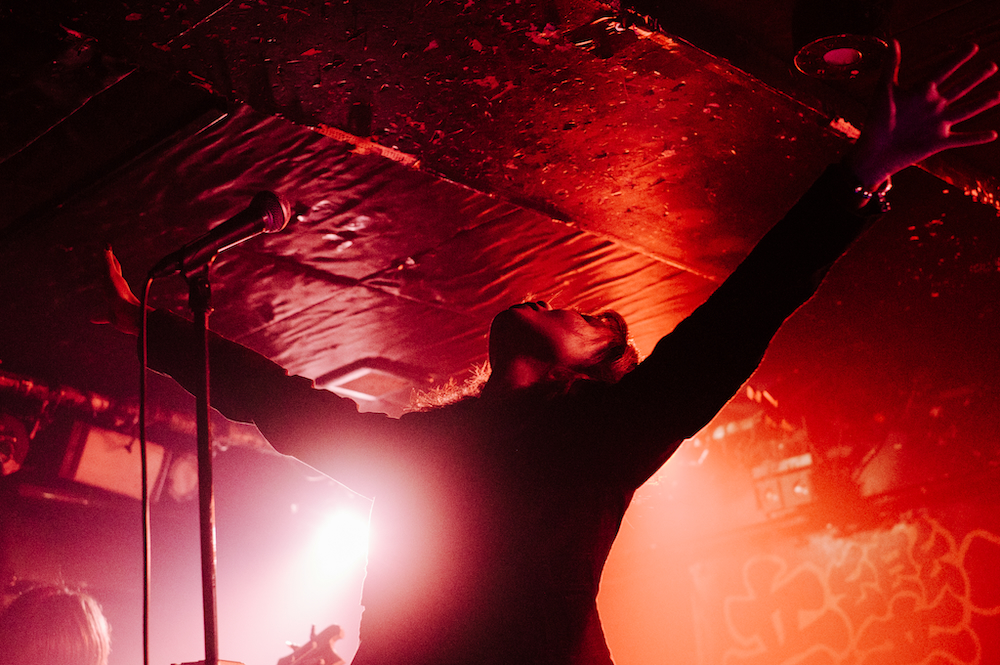

JOSHUA LEE
PHOTO
VIDEO
|
CONTACT
×
PHOTO
VIDEO
CONTACT
JOSHUA LEE
☰
STRATA
AMPCAFE 高円寺 | March 2025
ON LAND II
2023-present
CONAN
新宿 NINE SPICES | February 2025
WORLD CITIZEN
渋谷 HOME | Nov. 2024, Feb. 2025

SUN MOON HOLY CULT
東高円寺二万電圧 | January 2025
TOKYO HEAVY ROCKS
2023-present
LOOPRIDER
下北沢 ERA | December 2023
ON LAND
2020-2023